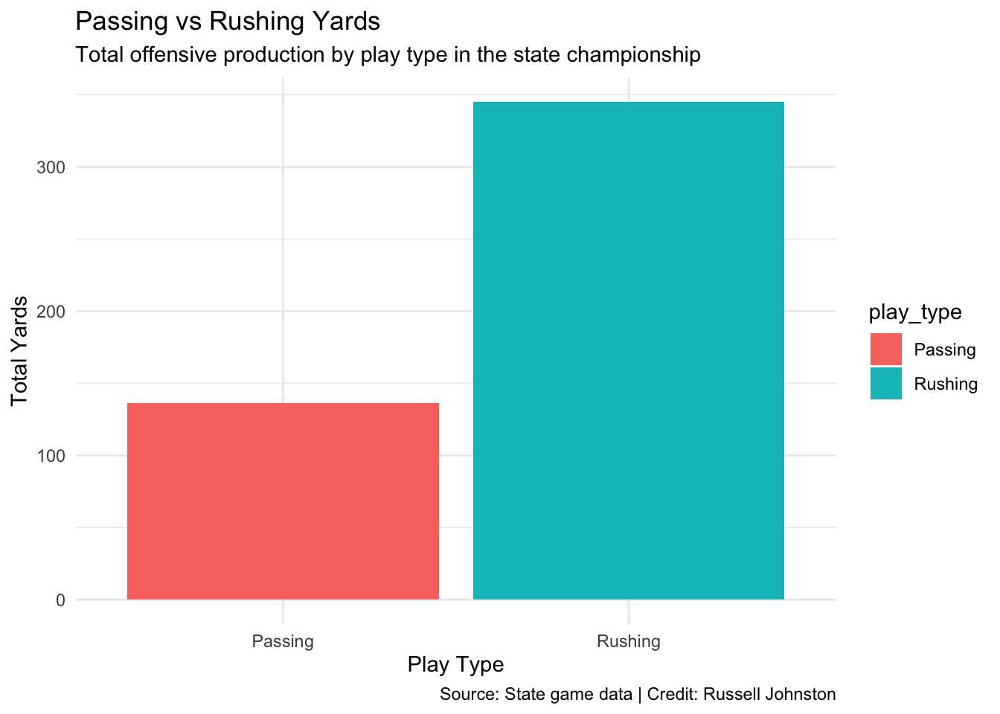
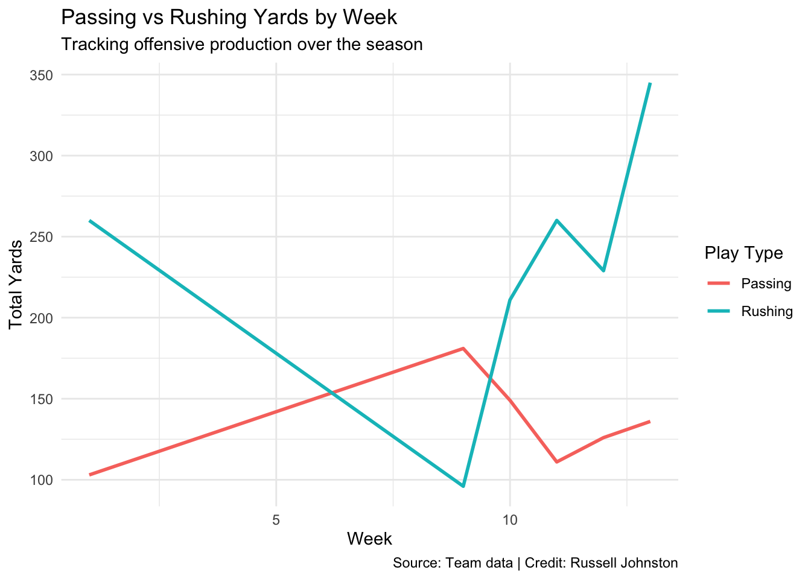

Code
library(tidyverse)
library(gt)
state<- read_csv("data/state.csv")Russell Johnston
April 10, 2026
ggplot(yards) +
geom_bar(aes(x = play_type, y = total_yards, fill = play_type),
stat = "identity") +
labs(
title = "Passing vs Rushing Yards ",
subtitle = "Total offensive production by play type in the state championship",
x = "Play Type",
y = "Total Yards",
caption = "Source: State game data | Credit: Russell Johnston"
) +
theme_minimal()
During the State Championship we relied heavily on the run game. The main reason is simple. They could not stop are running back. The wildest part about this is Gretna East stacked the box with 8 guys leaving the secondary in a cover zero and yet could not stop the run game.
eff <- read_csv("eff.csv", skip = 1)
eff_clean <- eff |>
rename(
down = 1,
efficient = 2,
count = 3,
percent = 4
) |>
fill(down) |>
filter(down != "ALL Down EFF")
eff_clean |>
gt() |>
cols_label(
down = "Down",
efficient = "Efficient?",
count = "Count",
percent = "Percent"
) |>
tab_header(
title = "Efficiency by Down",
subtitle = "How often the offense stayed efficient on each down"
) |>
tab_source_note(
source_note = "Source: eff.csv | Credit:Russell Johnston"
)| Efficiency by Down | |||
| How often the offense stayed efficient on each down | |||
| Down | Efficient? | Count | Percent |
|---|---|---|---|
| 1st Down EFF | Yes | 75 | 51.72% |
| 1st Down EFF | No | 70 | 48.28% |
| 2nd Down EFF | Yes | 66 | 60.55% |
| 2nd Down EFF | No | 43 | 39.45% |
| 3rd Down EFF | Yes | 25 | 39.68% |
| 3rd Down EFF | No | 38 | 60.32% |
| 4th Down EFF | Yes | 11 | 68.75% |
| 4th Down EFF | No | 5 | 31.25% |
| Source: eff.csv | Credit:Russell Johnston | |||
This table shows the effciency on each down throughout the season. Our efficiency is decided by yards gained. First down we need to get 4 yards on 2nd down we need to have gained 3 yards to be eficent on third down we need to convert. The data does back this up having the least amount of efficiency in third down. If we look at 4th down we see we were the most succesful. But, why? Our offensive ideology is 4 downs to get ten yards. Most programs force the 3rd down conversion and immediatly punt no matter what. For us, situations do play a factor but if it is 4th and short and we are not pinned back. We were going to take the chance and try to convert.
# A tibble: 6 × 31
TITLE `PLAY #` ODK QTR SERIES DN DIST `YARD LN` `GN/LS` EFF HASH
<chr> <dbl> <chr> <dbl> <dbl> <dbl> <dbl> <dbl> <dbl> <chr> <chr>
1 BEN.1 6 O 1 NA 1 10 -34 4 Y M
2 BEN.1 7 O 1 NA 2 6 -38 4 Y M
3 BEN.1 8 O 1 NA 3 2 -42 14 Y M
4 BEN.1 9 O 1 NA 1 10 44 2 N M
5 BEN.1 10 O 1 NA 2 8 42 42 Y M
6 BEN.1 21 O 1 NA 1 10 -28 5 Y M
# ℹ 20 more variables: `PLAY TYPE` <chr>, RESULT <chr>, `OFF FORM` <chr>,
# `OFF STR` <chr>, MOTION <chr>, `OFF PLAY` <chr>, PERSONNEL <lgl>,
# `PLAY CATEGORY` <lgl>, BLITZ <lgl>, `PLAY DIR` <lgl>, PASSER_Jersey <dbl>,
# PASSER_Name <chr>, `DEF FRONT` <chr>, COVERAGE <lgl>, RUSHER_Jersey <dbl>,
# RUSHER_Name <chr>, RECEIVER_Jersey <dbl>, RECEIVER_Name <chr>, GAP <lgl>,
# `PASS ZONE` <lgl>week1 <- week1 |> mutate(week = 1)
week2 <- week2 |> mutate(week = 2)
week3 <- week3 |> mutate(week = 3)
week4 <- week4 |> mutate(week = 4)
week5 <- week5 |> mutate(week = 5)
week6 <- week6 |> mutate(week = 6)
week7 <- week7 |> mutate(week = 7)
week8 <- week8 |> mutate(week = 8)
week9 <- week9 |> mutate(week = 9)
week10 <- week10 |> mutate(week = 10)
week11 <- week11 |> mutate(week = 11)
week12 <- week12 |> mutate(week = 12)
state <- state |> mutate(week = 13)ggplot(weekly) +
geom_line(aes(x = week, y = yards, color = type), size = 1) +
labs(
title = "Passing vs Rushing Yards by Week",
subtitle = "Tracking offensive production over the season",
x = "Week",
y = "Total Yards",
color = "Play Type",
caption = "Source: Team data | Credit: Russell Johnston"
) +
theme_minimal()
This chart tracks the offensive production throughout the season. We see a heavy dominance in the run game early in the season and in the post season. in the middle of the season we see a shift and a more balanced pass and run game. When we look at weeks 8 and 9, are run game was managed by the defense very well. However we see a peak in the passing game in week 8. In week 8 we saw Norris. This game went into overtime and was won off a game winning field goal. This shows Norris defense prioritized stopping our star running back Axemann and not defending the secondary. As we head into playoffs we see a dramatic spike in rushing yards showing the domination of Axemann. Overall our offense never had a consistent identity. Going from run heavy to balanced and back to run heavy. When one team found how to slow down Axemann our Quarterback Brockston Teply was able to find the wholes in the secondary when teams would stack the box. Through yard production overtime we can identify the main reason we were able to have an undefeated season. As Mrs. Tuohy once said “RUN THE DANG BALL”